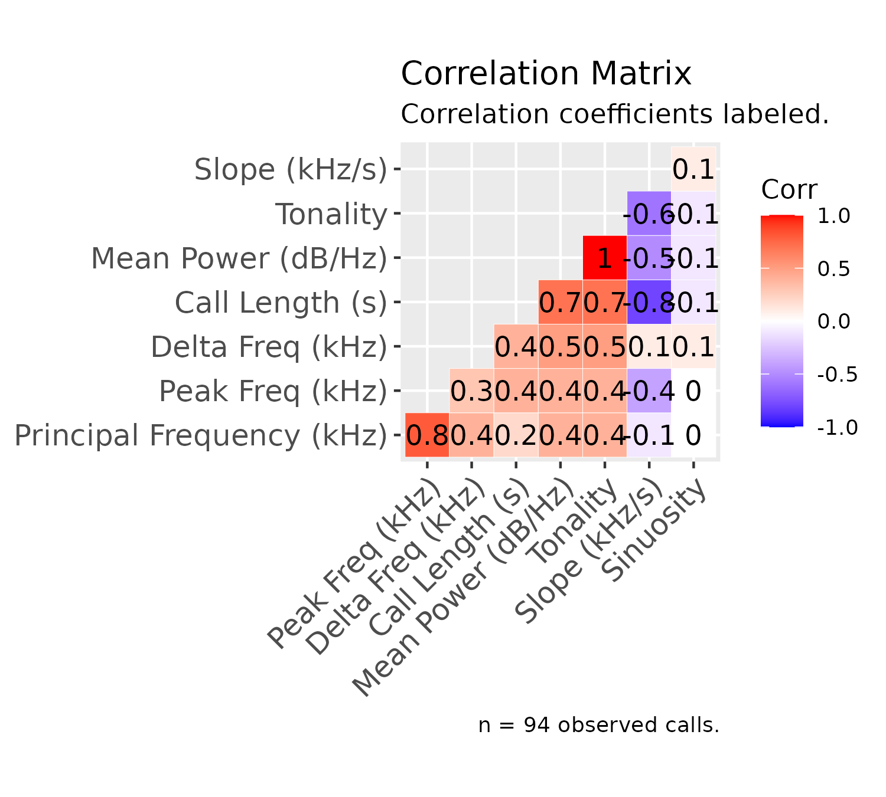

Introduction
The SqueakR package is a centralized, experiment-centered interface for efficiently organizing and analyzing bioacoustics data exported from DeepSqueak. Of its diverse functions, SqueakR is capable of generating quick plots from vocalization data detected from DeepSqueak. On top of these visualizations, the package contains functions which combine all exported DeepSqueak data from multiple recordings into a single experimental object, allowing subsequent analysis to be conducted directly from R.
Installation
From CRAN
To use SqueakR, we need to install the package. To install and load the CRAN version of the package, run the following function:
install.packages("SqueakR")Next, load the package:
From GitHub
To install the development version of the package from GitHub, run the code below. Ensure the devtools package is installed, and devtools is loaded using library(devtools), before running the following:
The Experiment Object
Creating an experiment
This package allows all data necessary for visualizations to be stored in a single object. However, to do so, the experimental object must be created. To create an experiment, run the following code:
experiment <- create_experiment(experiment_name = "my_experiment")
#> Creating new experiment...This code creates a new experiment object, with the name my_experiment. When the object is saved, it will be saved using this name, along with a timestamp. At this point, there’s nothing stored in this experiment object except its name, but let’s inspect how experiment is structured:
str(experiment)
#> List of 6
#> $ name : chr "my_experiment"
#> $ last_saved : POSIXct[1:1], format: "2022-06-25 02:12:38"
#> $ groups : NULL
#> $ animals : NULL
#> $ experimenters : NULL
#> $ experimental_data: list()We can see from the str() function that the experiment object has 5 main groups listed in it:
-
name: The name we just set for this experiment -
last_saved: A timestamp for the last time thisexperimentwas saved (in this case, this is the time the object was created) -
groups: An empty variable which will show the experimental groups -
animals: An empty variable which will show the distinct animal (IDs) tested -
experimenters: An empty variable which will show the experimenters who collected data -
experimental_data: An empty list which will store all of the raw and processed data for this experiment
Now that our experiment is created, we can start to add data to it.
Loading Data
When call data is exported from DeepSqueak, it includes all detected calls through the length of the recording. However, sometimes, we’re only interested in calls within a certain range of the entire recording. SqueakR has the add_timepoint_data() function to assist with this:
my_new_data <- add_timepoint_data(data_path = "../inst/extdata/Example_Mouse_Data.xlsx", t1 = 5, t2 = 25)
#> Adding call features Excel file to workspace...
#> Restricting data to range: 5 to 25 seconds...The parameters for add_timepoint_data() are defined as follows:
-
data_path: The full path to the data file -
t1: The timepoint at which calls will start being extracted into themy_new_dataobject -
t2: The timepoint at which calls will stop being extracted into the object.
In the context of the code above, we’ve just extracted all of the calls in the 5-25 second region. To view the data we’ve extracted to confirm this:
# The first few rows of the dataset
head(my_new_data)
#> # A tibble: 6 × 17
#> ID Label Accepted Score `Begin Time (s)` `End Time (s)` `Call Length (s)`
#> <dbl> <chr> <lgl> <dbl> <dbl> <dbl> <dbl>
#> 1 12 18 TRUE 0.573 5.36 5.38 0.0152
#> 2 13 12 TRUE 0.649 6.35 6.39 0.0403
#> 3 14 26 TRUE 0.931 6.46 6.51 0.0488
#> 4 15 19 TRUE 0.969 6.59 6.66 0.0787
#> 5 16 26 TRUE 0.885 6.73 6.77 0.0460
#> 6 17 9 TRUE 0.808 6.85 6.90 0.0445
#> # … with 10 more variables: `Principal Frequency (kHz)` <dbl>,
#> # `Low Freq (kHz)` <dbl>, `High Freq (kHz)` <dbl>, `Delta Freq (kHz)` <dbl>,
#> # `Frequency Standard Deviation (kHz)` <dbl>, `Slope (kHz/s)` <dbl>,
#> # Sinuosity <dbl>, `Mean Power (dB/Hz)` <dbl>, Tonality <dbl>,
#> # `Peak Freq (kHz)` <dbl>
# The last few rows of the dataset
tail(my_new_data)
#> # A tibble: 6 × 17
#> ID Label Accepted Score `Begin Time (s)` `End Time (s)` `Call Length (s)`
#> <dbl> <chr> <lgl> <dbl> <dbl> <dbl> <dbl>
#> 1 100 18 TRUE 0.839 23.2 23.2 0.0272
#> 2 101 8 TRUE 0.823 23.4 23.5 0.0755
#> 3 102 9 TRUE 0.910 23.5 23.5 0.0432
#> 4 103 18 TRUE 0.849 23.6 23.7 0.0550
#> 5 104 18 TRUE 0.849 23.7 23.7 0.0255
#> 6 105 18 TRUE 0.765 23.8 23.8 0.0329
#> # … with 10 more variables: `Principal Frequency (kHz)` <dbl>,
#> # `Low Freq (kHz)` <dbl>, `High Freq (kHz)` <dbl>, `Delta Freq (kHz)` <dbl>,
#> # `Frequency Standard Deviation (kHz)` <dbl>, `Slope (kHz/s)` <dbl>,
#> # Sinuosity <dbl>, `Mean Power (dB/Hz)` <dbl>, Tonality <dbl>,
#> # `Peak Freq (kHz)` <dbl>If we inspect the Begin Time (s) column in the first table that generated above, you’ll notice the first observation (row) represents a call that begins at ~5 seconds. Inspecting the End Time (s) column in the second table, the last call in the dataset ends at ~24 seconds, indicating that we’ve selected the 5-25 region for calls.
Scoring Data
Once raw data is loaded into R, we can calculate some summary statistics on the region we’ve selected. To do this, run the following code:
my_scored_data <- score_timepoint_data(data_subset = my_new_data,
group = "Control",
id = "my_data.xlsx",
animal = "3330",
experimenter = "my_name")
#> Summarizing call features for datapoint...
str(my_scored_data)
#> List of 16
#> $ id : chr "my_data.xlsx"
#> $ animal : chr "3330"
#> $ group : chr "Control"
#> $ experimenter : chr "my_name"
#> $ calls_n : int 94
#> $ call_length :List of 3
#> ..$ mean : num 0.0437
#> ..$ standard_deviation: num 0.0228
#> ..$ range : num 0.116
#> $ delta_frequency :List of 3
#> ..$ mean : num 16.8
#> ..$ standard_deviation: num 5.6
#> ..$ range : num 30.5
#> $ high_frequency :List of 3
#> ..$ mean : num 65.6
#> ..$ standard_deviation: num 4.11
#> ..$ range : num 19.2
#> $ low_frequency :List of 3
#> ..$ mean : num 48.8
#> ..$ standard_deviation: num 4.54
#> ..$ range : num 26
#> $ peak_frequency :List of 3
#> ..$ mean : num 62.2
#> ..$ standard_deviation: num 5.55
#> ..$ range : num 22.6
#> $ power :List of 3
#> ..$ mean : num -71.9
#> ..$ standard_deviation: num 5.82
#> ..$ range : num 26.9
#> $ principal_frequency:List of 3
#> ..$ mean : num 61.9
#> ..$ standard_deviation: num 3.8
#> ..$ range : num 16.4
#> $ sinuosity :List of 3
#> ..$ mean : num 1.41
#> ..$ standard_deviation: num 0.245
#> ..$ range : num 1.14
#> $ slope :List of 3
#> ..$ mean : num 318
#> ..$ standard_deviation: num 200
#> ..$ range : num 937
#> $ tonality :List of 3
#> ..$ mean : num 0.457
#> ..$ standard_deviation: num 0.109
#> ..$ range : num 0.484
#> $ raw : tibble [94 × 17] (S3: tbl_df/tbl/data.frame)
#> ..$ ID : num [1:94] 12 13 14 15 16 17 18 19 20 21 ...
#> ..$ Label : chr [1:94] "18" "12" "26" "19" ...
#> ..$ Accepted : logi [1:94] TRUE TRUE TRUE TRUE TRUE TRUE ...
#> ..$ Score : num [1:94] 0.573 0.649 0.931 0.969 0.885 ...
#> ..$ Begin Time (s) : num [1:94] 5.36 6.35 6.46 6.59 6.73 ...
#> ..$ End Time (s) : num [1:94] 5.38 6.39 6.51 6.66 6.77 ...
#> ..$ Call Length (s) : num [1:94] 0.0152 0.0403 0.0488 0.0787 0.046 ...
#> ..$ Principal Frequency (kHz) : num [1:94] 60.4 66.6 68.7 66.5 66.6 ...
#> ..$ Low Freq (kHz) : num [1:94] 51.8 66.2 48.7 51.4 48.3 ...
#> ..$ High Freq (kHz) : num [1:94] 61.9 67.3 71.3 69.2 69.3 ...
#> ..$ Delta Freq (kHz) : num [1:94] 10.06 1.11 22.59 17.82 20.93 ...
#> ..$ Frequency Standard Deviation (kHz): num [1:94] 2.618 0.266 5.784 3.991 5.354 ...
#> ..$ Slope (kHz/s) : num [1:94] 534.76 -5.56 352.47 94.86 357.88 ...
#> ..$ Sinuosity : num [1:94] 1.25 1.15 1.66 1.19 1.2 ...
#> ..$ Mean Power (dB/Hz) : num [1:94] -80.3 -66.9 -65 -60.5 -62.9 ...
#> ..$ Tonality : num [1:94] 0.281 0.597 0.581 0.671 0.648 ...
#> ..$ Peak Freq (kHz) : num [1:94] 61.9 66.6 67.9 69.1 68.1 ...Data Structure
Since there is a lot of data contained in this object, here is a summary of the structure.
The following variables are assigned to a single value:
-
animal: The animal (or testing group) ID, specified in thescore_timepoint_data()function. -
id: The name of the original file corresponding to the dataset, which can be accessed using the unblinding functions discussed later -
group: The experimental group, specified in thescore_timepoint_data()function. -
experimenter: The experimenter who collected the data, specified in thescore_timepoint_data()function. -
calls_n: The number of detected calls in the following range (automatically calculated)
The rest of these variables are extracted from the my_new_data object have sub-variables stored under them: mean, standard_deviation, and range:
call_lengthdelta_frequencyhigh_frequencylow_frequencypeak_frequencypowerprincipal_frequencysinuosityslopetonality
More information about the above variables can be found on the DeepSqueak wiki. Finally, the raw variable contains the entire extracted dataset (the my_new_data object), which can be referenced when plotting these data.
The data structure may appear complicated, but this will be useful later on to organize the data!
Adding Scored Data to Experiment
Now our data is prepared, we can add it to the experiment object we created. To do so, we can use the add_to_experiment() function. The parameters for the function are the experiment object (which we’ve conveniently labeled experiment), and the data we want to add (which we just assigned to my_scored_data in the previous section).
experiment <- add_to_experiment(experiment = experiment, added_data = my_scored_data)
#> Adding summarized data to experiment object...
#> Updating experiment metadata...Removing Data from Experiment
If we want to remove a call dataset from the experiment, we can run the following function:
experiment <- remove_experiment_data(experiment, data_id = 1)data_id corresponds to the index of data in the experiment object - for example, in the code above, the first data added to this experiment will be removed. This function also calls for the experiment to be updated (i.e., check the leftover data for leftover groups and/or experimenters), and updating the experiment metadata if there are any groups removed. Data can be indexed in the usual R style — to remove datasets 4 -> 8 in an experiment, your data_id variable can be set to 4:8.
Caution is advised for this function, since data that is removed cannot be undone. However, it can be reloaded by finding the original call data and adding it back to the experiment, or creating a new experiment using the pipelines detailed below (if many datasets were accidentally removed, and it would take too long to add data manually).
Summarizing the Experiment
Now, our new data is added to our experiment object! As seen in the previous section, running str(experiment) can produce an unwieldy representation of our experiment, so this is discouraged when dealing with large experiments. As an alternative, we can run the following SqueakR function:
describe_experiment(experiment = experiment)
#> Experiment name: my_experiment
#> Last saved: 2022-06-25 02:12:38
#> Experimenter(s): my_name
#> Animal(s): 3330
#> Experimental group(s): Control
#> Total call datasets: 1
#> Data for Control: 1This can be a great way to inspect the contents of our experiment, and it condenses the large list of parameters we set earlier. To clarify the last two lines of this output: Total call datasets shows the total number of call data sheets stored in the experiment (i.e. how many separately scored datasets were added to the experiment in total), and “Data for Control” indicates how many of these datasets are part of this particular experimental group. In this way, the function allows us to get a feel for how much of our data is part of any given experimental group, to ensure the data are balanced.
Updating the Experiment
The add_to_experiment() function runs another SqueakR function inside of it: update_experiment(). This function updates the “Experimenter(s)” and “Experimental group(s)” fields within our experiment object to reflect the data which is stored in it. In other words, when we add data that specifies a different experimental group or a different experimenter, the Experimenter(s) and Experimental group(s) metadata will auto-populate.
For completeness, the function is run below (however, since the experiment was already updated through the add_to_experiment() function, it will not change any values). It looks through the data stored in the experiment object, and searches for new groups or new experimenters. These new groups or experimenters are added to the groups and experimenters variables stored in the experiment object.
Note: In reality, since update_experiment() is embedded in some SqueakR subfunctions, it will not really be used very often (if at all). However, the function is available for use in the package, to allow experimenters to make sure they’ve updated their data.
experiment <- update_experiment(experiment = experiment)
#> Updating experiment metadata...Saving the Experiment
Finally, in order to save your experiment to a given location, you can run the following function. Simply change the value assigned to save_path to the full path to the directory you want to save the experiment to.
The file will be saved as an RData file, with the name “[experiment name] ([current date]).RData”
Note: The values in square brackets will auto-populate, based on the name you set for the experiment (based on the Creating an Experiment section) and the current date. This saving convention using day-by-day timestamps ensures you never lose more than a day of progress if any critical data deletions occur.
Experiment Pipelines
Usually, when there are many datasets present in an experiment, it can be unwieldy to switch between these various functions to create an experiment and add data to it. SqueakR has interactive pipeline functions which enable data to be added either semi-automatically (with experimenter input of metadata for every file) or automatically (without experimenter input for metadata). The semi-automatic pipeline can be run using the following code:
The data can be easily added this way, since the user will be prompted for parameters like experimenter, group, etc for specific data. It can also be helpful to supply descriptive names for the excel files (which may include information about experimenter name, experimental group, time range to subset, etc) when using this function, in order to ensure no mistakes are made while entering these data.
SqueakR also has a pipeline that can be used to automatically add data and metadata to an experiment without direct experimenter prompting. The way the pipeline works is it references a Google Sheets document which contains the metadata about the object. The pipeline prompts the user to validate columns in the sheet (confirm which column the “experimental groups” column is in), before adding data (which is stored in a specified local directory) to the new experiment. The advantage of automatic pipeline is that all metadata can be entered in an external Google Sheets document — if any mistakes are made in metadata entry, they can be easily corrected before running the pipeline.
On the other hand, if mistakes are made during metadata entry for the semi-automatic pipeline, the function will have to be stopped and re-run. Running the automatic pipeline is done the same way as the semi-automatic pipeline:
Google Sheets Formatting
There are only a few requirements for the referenced Google Sheet (which SqueakR will use to grab metadata from):
- The sheet accessed by SqueakR is organized by columns.
- Each column represents the filename, experimental group, experimenter, start time-point, and end time-point.
- The filename column matches the full name of the corresponding data file exactly (including the extension).
Besides these requirements, the order of rows or columns in the sheet can be according to whatever conventions the experimenter likes — files do not have to be in the same order as they appear in the folder containing the data. The pipeline will prompt the user for the link to the Sheets document, the actual sheet number which contains the metadata (usually 1, unless it is added to a separate document), as well as ask the user which column corresponds to each metadata.
From this point, the pipeline will loop through every file automatically, assigning the appropriate metadata based on your Google Sheet, and export the created experiment object (if requested).
Unblinding Functions
At the point of an experiment where we want to unblind ourselves to the anonymized datasets SqueakR has created, there are a few functions which can accomplish this:
unblind_all_ids(experiment)
#> [1] "my_data.xlsx"Since we only have one dataset, this is the only set that displays in the list. If we had more, they would be arranged in the order that they appear in the experiment, allowing us to decode the anonymized datasets using the functions below. The first function allows us to find the corresponding dataset id for a filename:
unblind_data_id(experiment, "my_data.xlsx")
#> [1] 1The next function allows us to do the opposite — to find the name of a particular anonymized dataset:
unblind_data_name(experiment, 1)
#> [1] "my_data.xlsx"Data Visualization
Overview
The SqueakR package offers many tools for visualization of data, and these can be applied to the experiment object we created to inspect our data. This section of the document will go in detail for what each of these visualizations look like. In order to familiarize ourselves with the R syntax, and recap on the structure of the experiment object, we can retrieve the raw data from the data we just added to our experiment by running the following:
experiment$experimental_data[1]$call_data$raw
#> # A tibble: 94 × 17
#> ID Label Accepted Score `Begin Time (s)` `End Time (s)` `Call Length (s)`
#> <dbl> <chr> <lgl> <dbl> <dbl> <dbl> <dbl>
#> 1 12 18 TRUE 0.573 5.36 5.38 0.0152
#> 2 13 12 TRUE 0.649 6.35 6.39 0.0403
#> 3 14 26 TRUE 0.931 6.46 6.51 0.0488
#> 4 15 19 TRUE 0.969 6.59 6.66 0.0787
#> 5 16 26 TRUE 0.885 6.73 6.77 0.0460
#> 6 17 9 TRUE 0.808 6.85 6.90 0.0445
#> 7 18 26 TRUE 0.805 6.97 7.01 0.0421
#> 8 19 2 TRUE 0.804 7.10 7.15 0.0504
#> 9 20 26 TRUE 0.765 7.21 7.24 0.0352
#> 10 21 26 TRUE 0.783 7.31 7.36 0.0552
#> # … with 84 more rows, and 10 more variables:
#> # `Principal Frequency (kHz)` <dbl>, `Low Freq (kHz)` <dbl>,
#> # `High Freq (kHz)` <dbl>, `Delta Freq (kHz)` <dbl>,
#> # `Frequency Standard Deviation (kHz)` <dbl>, `Slope (kHz/s)` <dbl>,
#> # Sinuosity <dbl>, `Mean Power (dB/Hz)` <dbl>, Tonality <dbl>,
#> # `Peak Freq (kHz)` <dbl>
$ Operator in SqueakR
The $ operator allows us to dive deeper in a list, and inspect values stored within that list. Using the code above, we access the raw data we put into the experiment by going from experiment -> experimental_data[1] -> call_data -> raw. Specifying the number in square brackets (i.e. experiment$experimental_data[1]) will locate the first data added, specifying experiment$experimental_data[2] will located the second data, etc. Since we only added one dataset to the experiment, experiment$experimental_data[1] will lead us to that first set of data we added. From there, we navigate to call_data (which is a deliberately unremarkable variable in order to blind the user to the data stored inside it), and finally the raw data.
Especially if you are new to R, this structure may appear complicated, but it allows our data to be much more organized and allows graphing to be more efficient. We’ll use this structure when locating the data used to graph our visualizations.
Note: For the following functions, the only required variable is the data_path variable, or the path towards our raw data. All other parameters (graph_title, graph_subtitle, etc) are optional, since there are default titles and descriptions prepared in SqueakR.
Ethnogram-Style Plots
Standard Ethnogram
We can plot an ethnogram to reveal the occurance of a behavior (in our case, a call) over time, using the following function:
plotEthnogram(data_path = experiment$experimental_data[1]$call_data$raw)
We can also specify the graph title and subtitle, if we want to change them, by setting some optional parameters:
plotEthnogram(experiment$experimental_data[1]$call_data$raw,
graph_title = "My Ethnogram",
graph_subtitle = "This is the description I want instead!")
Tonality Ethnogram (Split)
Tonality can be used as a proxy for the signal-to-noise ratio for a particular call. We can plot the same ethnogram, and split the detected calls according to tonality, using the following code:
plotEthnogramSplitByTonality(experiment$experimental_data[1]$call_data$raw,
graph_title = "My Tonality-Split Ethnogram")
3D Cluster Plot [GitHub Release]
We can also plot the call clusters (custom labels) on a 3D plane to examine the density of calls as a function of principal frequency (kHz), call length (s), and mean power (dB/kHz) below:
plotClusters(experiment$experimental_data[1]$call_data$raw)3D Surface Plot [GitHub Release]
We can use the MASS package to provide 2-dimensional kernel density estimations on a given call dataset, and plot it as a surface against principal frequency and call length (two important metrics of calls):
plotSurface(experiment$experimental_data[1]$call_data$raw)2D Contour Plot [GitHub Release]
We can plot a similar, non-interactive form of the plot using the function below. The benefit to using a 2D contour plot is its axes are flanked by histograms representing the distributions of call length and principal frequency across its axes:
plotContours
#> function (data_path)
#> {
#> x <- data_path$`Principal Frequency (kHz)`
#> y <- data_path$`Call Length (s)`
#> s <- subplot(plot_ly(x = x, type = "histogram"), plotly_empty(type = "scatter",
#> mode = "markers"), plot_ly(x = x, y = y, type = "histogram2dcontour"),
#> plot_ly(y = y, type = "histogram"), nrows = 2, heights = c(0.2,
#> 0.8), widths = c(0.8, 0.2), margin = 0, shareX = TRUE,
#> shareY = TRUE, titleX = FALSE, titleY = FALSE)
#> fig <- layout(s, showlegend = FALSE, title = "2D Contour Plot of Principal Frequency (x) against Call Length (y)")
#> fig
#> }
#> <bytecode: 0x55aa042d5d40>
#> <environment: namespace:SqueakR>Sunburst Plots [GitHub Release]
In order to inspect the distributions of metadata (i.e. how much experimenters contributed to an experiment, or how many datasets an animal contributed to an experimental group), SqueakR has sunburst plotting functions which can be called, as shown below. These graphs are interactive — a group can be clicked to expand that subsection of the graph.
plotSunburstAnimals(experiment)The same can be done for experimenter distributions:
plotSunburstExperimenters(experiment)Density-Style Plots
Frequency Density Plot (Stacked)
We can plot the frequency ranges of calls using the following function:
plotDensityStackedByFrequency(experiment$experimental_data[1]$call_data$raw)
With density graphs that are stacked, we can highlight a specific group using the following optional parameter:
plotDensityStackedByFrequency(experiment$experimental_data[1]$call_data$raw,
chosen_group = 50)
Frequency Density Plot (Split)
Oftentimes, when there are too many groups stacked in the above graph, it can be more useful to either highlight the group of interest (as we did above), or split the graph according to frequency group, which can be done below:
plotDensitySplitByFrequency(experiment$experimental_data[1]$call_data$raw)
Custom Label Density Plot (Stacked)
In DeepSqueak, we can label calls either manually, or automatically, using computer vision to assess calls based on the frequency regions in which they predominate, call length, or shape of call contours, among some other factors. These manual or auto-assigned labels are exported from DeepSqueak along with the other call data, and as a result are stored in our experiment object.
Density plots can also be configured for these custom labels, as shown below:
plotDensityStackedByCustom(experiment$experimental_data[1]$call_data$raw)
Custom Label Density Plot (Split)
This density plot can also be split according to label:
plotDensitySplitByCustom(experiment$experimental_data[1]$call_data$raw)
Duration Density Plot (Stacked)
We can graph duration - call length using a similar stacked density plot, shown in the code below:
plotDensityStackedByDuration(experiment$experimental_data[1]$call_data$raw)
We can also split these duration groups:
plotDensitySplitByDuration(experiment$experimental_data[1]$call_data$raw)
Histogram Plot
We can plot a histogram representing the distribution of delta frequencies (the difference between the highest and lowest frequencies):
plotDeltaHistogram(experiment$experimental_data[1]$call_data$raw)
Box Plot
We can plot a box-plot distribution of labeled calls, organized by principal frequency (to get a sense of the frequencies where specific call types predominate) using the following code:
plotPrincipalBoxplot(experiment$experimental_data[1]$call_data$raw)
Correlation Plot
Finally, we can plot a correlation matrix, which displays correlations between call features (listed in the Data Structure section), as well as correlation coefficients:
plotCorrelations(experiment$experimental_data[1]$call_data$raw)
Preview Dataset Visualizations
If you don’t want to add data to the experiment object before visualizing data (in other words, preview the visualizations for a single Excel file), you can run the same plotting functions as above, setting the first parameter to the full path to that file:
plotDensityStackedByFrequency("../inst/extdata/Example_Mouse_Data.xlsx")-1.png)
Keep in mind these plots will generate for the entire set of data, not a subset of the data like we can do using the experiment object functions. The only parameter required for these visualizations is the full path to the data file, which makes it easy to produce rapid visualizations based on individual Excel files.
If we want to view an entire set of visualizations (shown in the above sections) for an Excel file as a PDF, we can also run the following function:
plotSummaryPDF("../inst/extdata/Example_Mouse_Data.xlsx", save_path = tempdir())
#> Loading DeepSqueak Excel file...
#> Writing PDF file...
#> Adding charts to PDF...
#> Saving PDF...Note that the same function can be run for a specific dataset stored within the experiment, using the same path conventions discussed earlier:
plotSummaryPDF(experiment$experimental_data[1]$call_data$raw, save_path = tempdir())
#> Loading DeepSqueak Excel file...
#> Writing PDF file...
#> Adding charts to PDF...
#> Saving PDF...Data Analysis
Replicating analysis
In order to replicate analysis, let’s add another file to our experiment by running the following function:
additional_data <- add_timepoint_data(data_path = "../inst/extdata/Example_Mouse_Data.xlsx", t1 = 30, t2 = 50)
#> Adding call features Excel file to workspace...
#> Restricting data to range: 30 to 50 seconds...
additional_data <- score_timepoint_data(data_subset = additional_data,
group = "AB",
id = "Example_Mouse_Data2.xlsx",
animal = "2173",
experimenter = "new_experimenter")
#> Summarizing call features for datapoint...
experiment <- add_to_experiment(experiment = experiment, added_data = additional_data)
#> Adding summarized data to experiment object...
#> Updating experiment metadata...From this code, a different range of time (30-50 seconds) was subset from the same data file, so different calls were extracted. Just to get a sense of what the experiment object looks like after adding these data:
describe_experiment(experiment)
#> Experiment name: my_experiment
#> Last saved: 2022-06-25 02:12:38
#> Experimenter(s): my_name, new_experimenter
#> Animal(s): 3330, 2173
#> Experimental group(s): Control, AB
#> Total call datasets: 2
#> Data for Control: 1
#> Data for AB: 1As mentioned earlier when we first ran this function, we can now see how many datasets are stored under each condition. You’ll also notice that the “Experimenters” and “Experimental groups” field has auto-populated, based on the parameters for the new data we just added.
Let’s try adding one more experimental group and looking at the experiment object now:
third_dataset <- add_timepoint_data(data_path = "../inst/extdata/Example_Mouse_Data.xlsx", t1 = 70, t2 = 90)
#> Adding call features Excel file to workspace...
#> Restricting data to range: 70 to 90 seconds...
third_dataset <- score_timepoint_data(data_subset = third_dataset,
group = "Sham",
id = "Example_Mouse_Data3",
animal = "8072",
experimenter = "experimenter_3")
#> Summarizing call features for datapoint...
experiment <- add_to_experiment(experiment = experiment, added_data = third_dataset)
#> Adding summarized data to experiment object...
#> Updating experiment metadata...Here, we’ve picked a new range within the same file and added this information to our dataset. If we inspect the experiment object again, we’ll see the same fields as last time auto-populate:
describe_experiment(experiment)
#> Experiment name: my_experiment
#> Last saved: 2022-06-25 02:12:38
#> Experimenter(s): my_name, new_experimenter, experimenter_3
#> Animal(s): 3330, 2173, 8072
#> Experimental group(s): Control, AB, Sham
#> Total call datasets: 3
#> Data for Control: 1
#> Data for AB: 1
#> Data for Sham: 1Let’s also try checking out how the sunburst plots have changed:
plotSunburstAnimals(experiment)
plotSunburstExperimenters(experiment)Inter-group comparison plots
Once we’ve finished adding all of our data to the experiment object, we can start comparing metrics between groups. To do this, it will be useful to revisit the structure experiment object.
Within the experiment object is a list called experimental_data, which contains all our data (processed and raw) for each time range we select. Under the call_data for any given object lie the metrics we can compare (call_length, delta_frequency, high_frequency, low_frequency, peak_frequency, power, principal_frequency, sinuosity, slope, and tonality). The way these variables are written in the experiment object (i.e. lowercase with underscores between words) will be the same way it will be entered into the following function to generate comparisons between groups:
analyze_factor(experiment = experiment, analysis_factor = "delta_frequency")
In the above plot, we compare delta frequency (the average range of frequencies for all calls in a given time range) between different groups. The data look similar because they are based on the same Excel file, just at different time-points, but this highlights the versatility of data extraction using DeepSqueak, in that call data can be processed in not only a between-groups manner but also a within-groups manner.
We can assess other comparisons in this way, by ensuring that we set analysis_factor to the name of the variable previously specified in the Data Structure section, but written in “quotes”. Keeping this format ensures that SqueakR knows which data to compare.
Inter-group Summary [GitHub Release]
Once we’ve added all of our data to our experiment, we can request a summary of our variables, grouped by the experimental groups we’ve set in order to inspect the data distribution between them:
squeakrSummary(experiment)
#> The data contains 236 observations, grouped by group, of the following 19 variables:
#>
#> - AB (n = 72):
#> - ID: Mean = 177.50, SD = 20.93, range: [142, 213]
#> - Label: 18 entries, such as 26 (n = 15); 18 (n = 13); 8 (n = 7) and 15 others
#> - Accepted: 1 level, namely TRUE (n = 72)
#> - Score: Mean = 0.79, SD = 0.11, range: [0.51, 0.96]
#> - Begin_Time: Mean = 36.19, SD = 5.56, range: [30.23, 49.85]
#> - End_Time: Mean = 36.25, SD = 5.56, range: [30.27, 49.86]
#> - Call_Length: Mean = 0.06, SD = 0.04, range: [8.84e-03, 0.17]
#> - Principal_Frequency: Mean = 63.92, SD = 7.04, range: [50.25, 89.37]
#> - Low_Freq: Mean = 50.77, SD = 5.23, range: [44.25, 77.71]
#> - High_Freq: Mean = 70.12, SD = 10.27, range: [50.70, 101.83]
#> - Delta_Freq: Mean = 19.35, SD = 9.09, range: [1.33, 49.35]
#> - Frequency_Standard_Deviation: Mean = 5.26, SD = 3.05, range: [0.34, 18.22]
#> - Slope: Mean = 153.64, SD = 317.19, range: [-1120.29, 860.86]
#> - Sinuosity: Mean = 1.50, SD = 0.28, range: [1.05, 2.54]
#> - Mean_Power: Mean = -65.07, SD = 7.94, range: [-87.28, -49.53]
#> - Tonality: Mean = 0.57, SD = 0.13, range: [0.20, 0.80]
#> - Peak_Freq: Mean = 65.07, SD = 7.82, range: [50.70, 90.45]
#> - index: Mean = 36.50, SD = 20.93, range: [1, 72]
#>
#> - Control (n = 94):
#> - ID: Mean = 58.50, SD = 27.28, range: [12, 105]
#> - Label: 10 entries, such as 18 (n = 36); 26 (n = 24); 2 (n = 9) and 7 others
#> - Accepted: 1 level, namely TRUE (n = 94)
#> - Score: Mean = 0.78, SD = 0.12, range: [0.51, 0.97]
#> - Begin_Time: Mean = 15.82, SD = 5.43, range: [5.36, 23.81]
#> - End_Time: Mean = 15.87, SD = 5.43, range: [5.38, 23.84]
#> - Call_Length: Mean = 0.04, SD = 0.02, range: [0.02, 0.13]
#> - Principal_Frequency: Mean = 61.87, SD = 3.80, range: [52.40, 68.79]
#> - Low_Freq: Mean = 48.80, SD = 4.54, range: [40.26, 66.21]
#> - High_Freq: Mean = 65.57, SD = 4.11, range: [57.64, 76.81]
#> - Delta_Freq: Mean = 16.77, SD = 5.60, range: [1.11, 31.58]
#> - Frequency_Standard_Deviation: Mean = 4.42, SD = 1.41, range: [0.27, 7.73]
#> - Slope: Mean = 318.38, SD = 200.15, range: [-111.24, 825.64]
#> - Sinuosity: Mean = 1.41, SD = 0.24, range: [1.09, 2.23]
#> - Mean_Power: Mean = -71.89, SD = 5.82, range: [-82.20, -55.35]
#> - Tonality: Mean = 0.46, SD = 0.11, range: [0.27, 0.75]
#> - Peak_Freq: Mean = 62.18, SD = 5.55, range: [49.57, 72.13]
#> - index: Mean = 119.50, SD = 27.28, range: [73, 166]
#>
#> - Sham (n = 70):
#> - ID: Mean = 366.50, SD = 20.35, range: [332, 401]
#> - Label: 15 entries, such as 12 (n = 12); 26 (n = 11); 25 (n = 8) and 12 others
#> - Accepted: 1 level, namely TRUE (n = 70)
#> - Score: Mean = 0.79, SD = 0.10, range: [0.54, 0.95]
#> - Begin_Time: Mean = 78.02, SD = 6.02, range: [70.05, 89.02]
#> - End_Time: Mean = 78.07, SD = 6.02, range: [70.11, 89.06]
#> - Call_Length: Mean = 0.05, SD = 0.03, range: [0.01, 0.13]
#> - Principal_Frequency: Mean = 65.71, SD = 10.31, range: [49.60, 95.91]
#> - Low_Freq: Mean = 54.92, SD = 7.58, range: [40.18, 76.24]
#> - High_Freq: Mean = 72.06, SD = 12.94, range: [53.43, 109.70]
#> - Delta_Freq: Mean = 17.14, SD = 9.73, range: [1.71, 51.85]
#> - Frequency_Standard_Deviation: Mean = 5.15, SD = 3.37, range: [0.70, 18.35]
#> - Slope: Mean = 237.79, SD = 274.02, range: [-457.94, 922.31]
#> - Sinuosity: Mean = 1.57, SD = 0.59, range: [1.08, 5.04]
#> - Mean_Power: Mean = -69.79, SD = 5.16, range: [-83.80, -56.80]
#> - Tonality: Mean = 0.50, SD = 0.09, range: [0.30, 0.73]
#> - Peak_Freq: Mean = 66.33, SD = 10.22, range: [47.23, 92.68]
#> - index: Mean = 201.50, SD = 20.35, range: [167, 236]Inter-group ANOVA
SqueakR also has a function for calculating ANOVA between the different groups, establishing the presence or absence of at least one significant difference between groups, which can is run below:
squeakrANOVA(experiment = experiment, analysis_factor = "Delta_Freq")
#> Coefficient covariances computed by hccm()
#> ANOVA Table (type II tests)
#>
#> Effect DFn DFd F p p<.05 ges
#> 1 group 2 233 2.266 0.106 0.019We can use this function to justify our statistically-significant data:
squeakrANOVA(experiment = experiment, analysis_factor = "Call_Length")
#> Coefficient covariances computed by hccm()
#> ANOVA Table (type II tests)
#>
#> Effect DFn DFd F p p<.05 ges
#> 1 group 2 233 7.005 0.001 * 0.057SqueakR Dashboard
Finally, the SqueakR package features a Shiny Dashboard which can be used to explore data and conduct analyses between groups, as well as summarize call and experiment data, within a single R application.
The primary benefit of this dashboard is it exists as a centralized interface for experimenters to upload their experiments and conduct analyses efficiently without using R code (if users happen to be less code inclined). Plots with relatively complicated syntax to access data can be easily graphed in the dashboard, by selecting the call dataset of interest in a drop-down widget.
The dashboard is launched in the console using a SqueakR function:
Future Directions
SqueakR was developed with a primary aim to streamline bioacoustics data processing in experiments by processing data automatically — allowing busy experimenters to go straight from data collection to results. To this end, one of the future directions for this project include increasing the analytical post-processing capabilities of the package.
Adding more uses of Report package functions (on CRAN and GitHub) to SqueakR will allow processed data to connect directly to statistical analyses, and would be useful for processing DeepSqueak data.
Any suggestions or feedback on current and future directions are welcome in the SqueakR Discussions page!